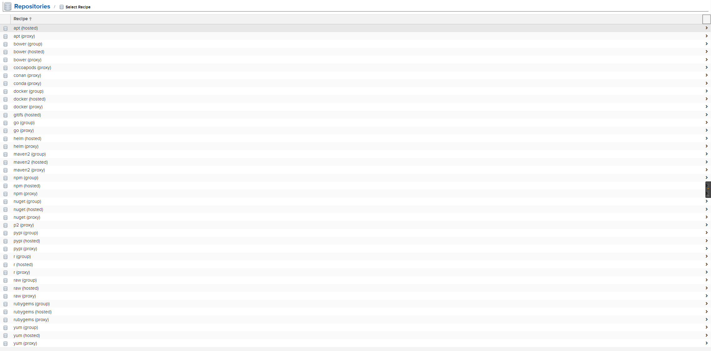
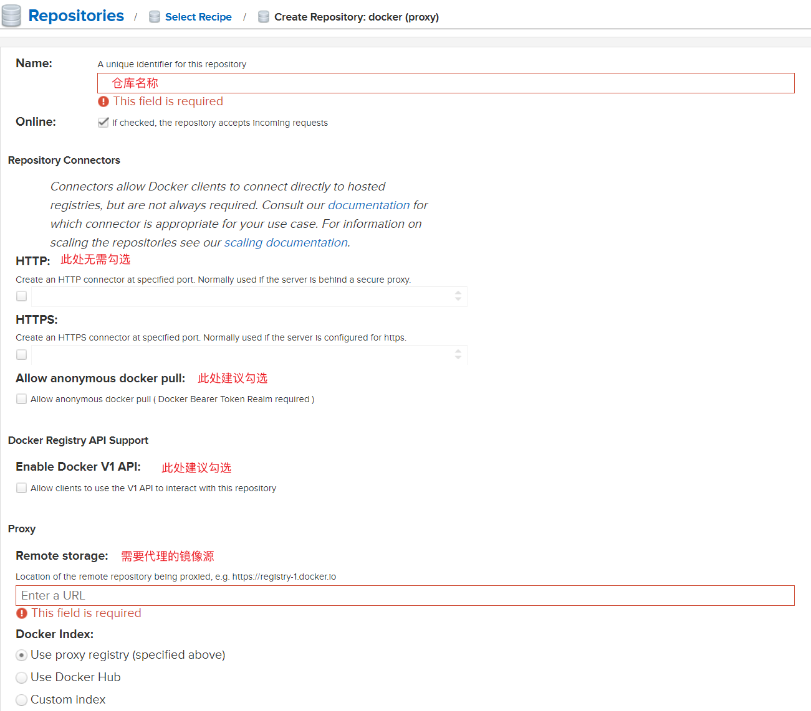
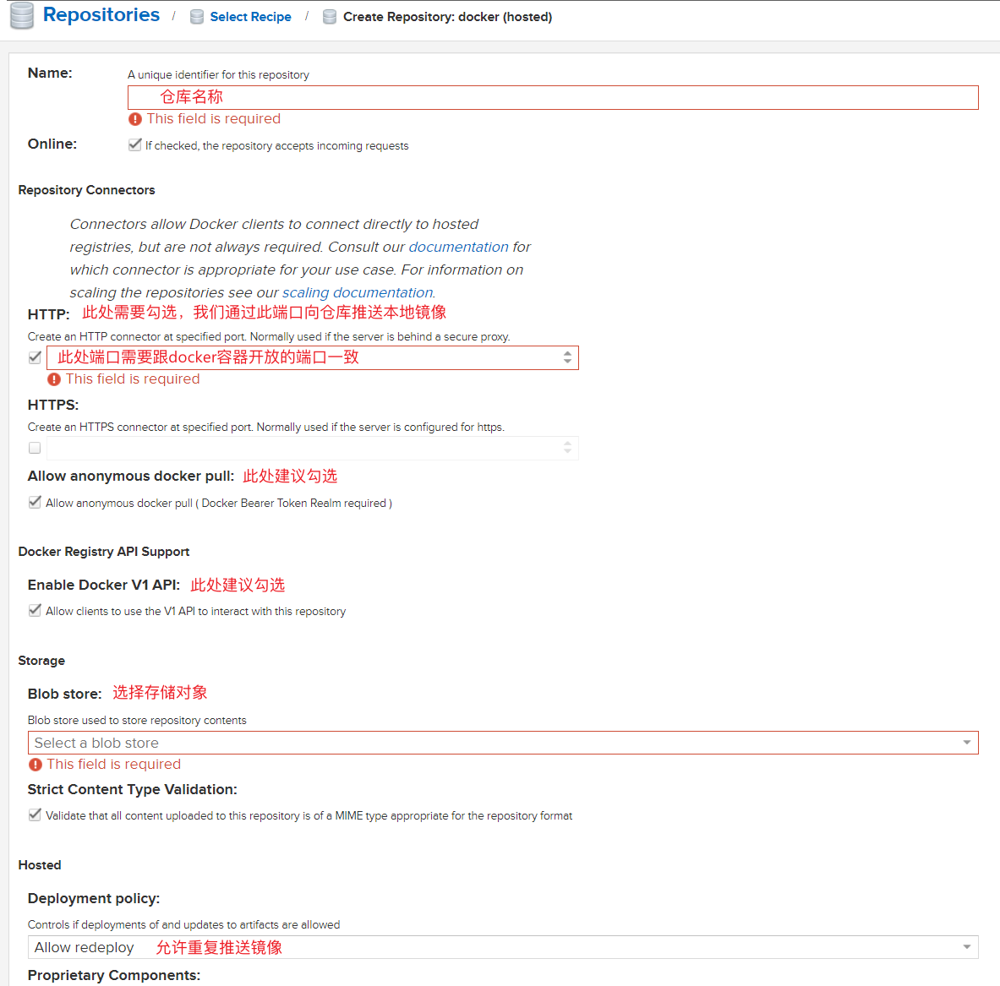
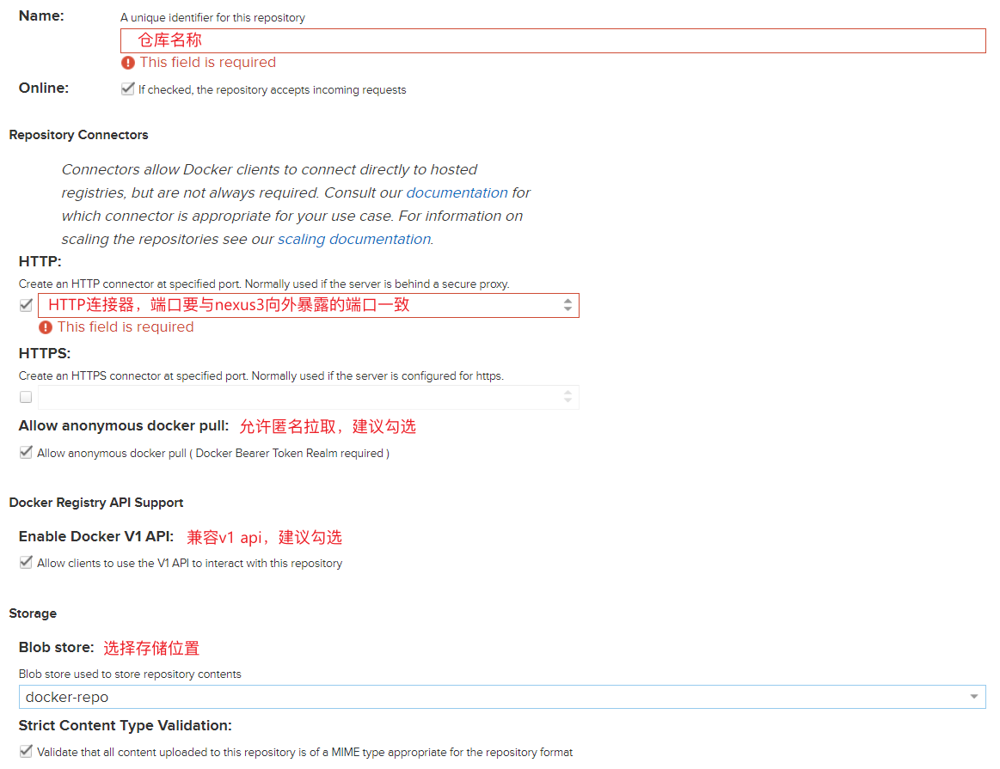
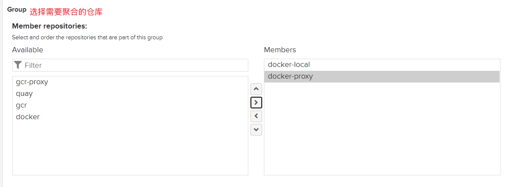
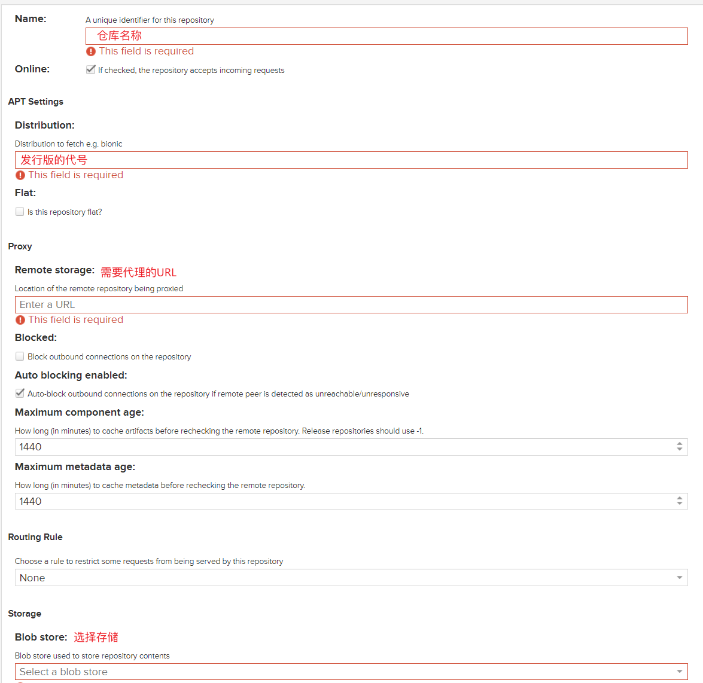

什么是DevOps？
DevOps的哲学暂且不表，使用Docker搭建nexus3私有镜像仓库。
关键词：nexus3
前言
在搭建K8s容器平台时，有些镜像需要经常性的被拉取，有时候外网带宽会被大量占用，这在业务上线后是不可取的，为了方便镜像的拉取，私有仓库的概念应运而生。
本文主要介绍使用nexus3搭建私有仓库。
安装
为了方便起见我们这里直接使用Docker进行快速搭建。
为节省时间，我们这里先拉取好了镜像：
1 2 3 4 5 6 7 8 9 10 11 12 13 14 15 16 17 18 19 20 21 22 version: '3.6' services: nexus3: restart: always image: sonatype/nexus3 container_name: nexus3 environment: - https_proxy=http://192.168.31.75:7890 - http_proxy=http://192.168.31.75:7890 volumes: - ./nexus-data:/nexus-data ulimits: nofile: soft: 1000000 hard: 1000000 privileged: true ports: - 38081 :8081 - 7890 :7890 - 7891 :7891 - 8891 :8891
这里的端口分别是nexus3界面的端口，和。。。。。。。 ##
设置代理类型
Nexus3可以被称为是一个全能型的选手，可以代理几乎所有类型的仓库。

这里介绍几种类型，首先介绍Docker
docker
docker类型分为docker(group)、docker(hosted)、docker(proxy)三种类型。
docker(proxy)：顾名思义就是代理外部仓库，创建设置可以参考以下

这里的HTTP连接器不用选，因为我们后面会通过docker(group)类型聚合这docker(hosted)、docker(proxy)这两种类型的仓库。
远程仓库地址可以使用公开的镜像源，如：
https://hub-mirror.c.163.com
https://mirror.baidubce.com
http://f1361db2.m.daocloud.io
https://ustc-edu-cn.mirror.aliyuncs.com
如果网络条件允许，最好还是使用官方的源：https://registry-1.docker.io，这样会避免由于镜像不更新而导致的错误。
docker(hosted)：允许将本地镜像推送到私有仓库的仓库类型，创建设置可以参考以下

这里需要选择HTTP连接器，我们通过此HTTP连接器向仓库推送本地镜像
docker(group)：将两者类型或者更多种类型的仓库聚合在一起，一起向外部提供服务


这里需要选择HTTP连接器，我们通过此HTTP连接器拉取proxy代理的镜像和经过hosted上传的镜像；
这里选择的聚合仓库包含proxy和hosted类型的仓库，我们就可以通过此聚合仓库上传和下载镜像了；
Nginx代理
因为某些原因，我们需要使用nginx反向代理，这里给出使用SSL证书的例子：
1 2 3 4 5 6 7 8 9 10 11 12 13 14 15 16 17 18 19 20 21 22 23 24 25 26 27 28 29 30 31 32 33 34 35 36 37 38 39 40 41 42 43 44 45 46 47 48 49 50 51 52 server { listen 80 ; server_name hub.deepsoft-tech.com; location / { return 301 https://$host $request_uri ; } } server { charset utf-8 ; listen 443 ssl; server_tokens off ; server_name hub.deepsoft-tech.com; ssl_session_cache shared:SSL:10m ; ssl_certificate /ssl/idocker.crt; ssl_certificate_key /ssl/idocker.key; access_log /var/log/nginx/docker.io.log main; client_max_body_size 0 ; chunked_transfer_encoding on ; ssl_session_cache shared:SSL:10m ; ssl_session_timeout 10m ; ssl_ciphers HIGH:!aNULL:!MD5; ssl_prefer_server_ciphers on ; ssl_protocols TLSv1 TLSv1.1 TLSv1.2 TLSv1.3 ; location ~ ^/(v1|v2)/[^/]+/?[^/]+/blobs/ { if ($request_method ~* (POST|PUT|DELETE|PATCH|HEAD) ) { rewrite ^/(.*)$ /repository/docker-local/$1 last ; } rewrite ^/(.*)$ /repository/docker/$1 last ; } location ~ ^/(v1|v2)/ { if ($request_method ~* (POST|PUT|DELETE|PATCH) ) { rewrite ^/(.*)$ /repository/docker-local/$1 last ; } rewrite ^/(.*)$ /repository/docker/$1 last ; } location / { proxy_pass http://127.0.0.1:38081/; proxy_set_header Host $host ; proxy_connect_timeout 3600 ; proxy_send_timeout 3600 ; proxy_read_timeout 3600 ; proxy_set_header X-Real-IP $remote_addr ; proxy_buffering off ; proxy_request_buffering off ; proxy_set_header X-Forwarded-For $proxy_add_x_forwarded_for ; proxy_set_header X-Forwarded-Proto $scheme ; } }
这么看，hosted类型和group类型的仓库就不需要设置HTTP连接器了；
经过以上设置，推送请求就全部被hosted类型的仓库接管了，而拉取请求则被group类型的仓库接管了；
经过上面的一顿操作，就可以通过一个URL拉取所有的镜像了
APT仓库
有时候需要缓存apt的包，所有就有了下面的文章，幸运的是nexus支持apt类型，稍加设置即可

Distribution：发行版的代号，这里以Ubuntu LTS 20.04 为例：focal
Remote storage：代理仓库地址，可以使用镜像源
Nginx代理
使用上文的配置文件即可
一键替换
1 sudo sed -i 's|http://mirrors.aliyun.com|https://repo.deepsoft-tech.com/repository|g' /etc/apt/sources.list
1 sudo sed -i 's|https://mirrors.aliyun.com/docker-ce/linux/ubuntu|https://repo.deepsoft-tech.com/repository/docker-apt' /etc/apt/sources.list.d/docker.list